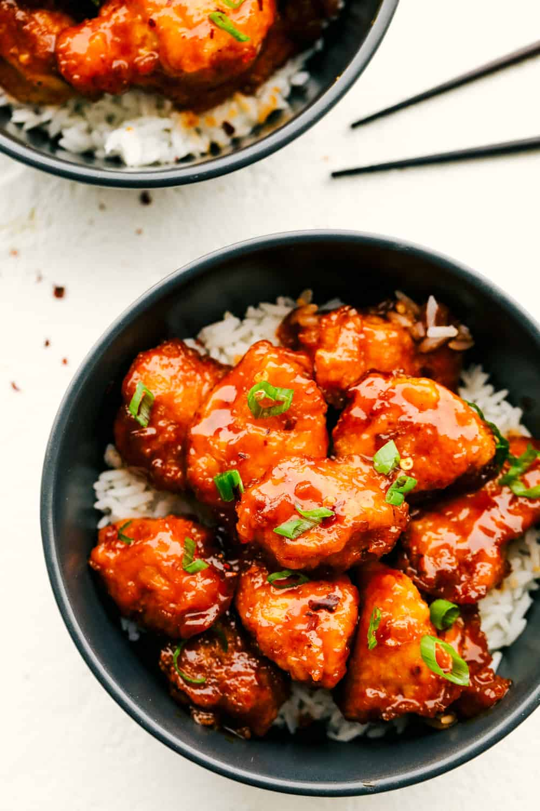

Firecracker Chicken

Sweet, Spicy, and Crispy! What more could you want?!
Shocker: We’re really into low-maintenance weeknight recipes. Because getting every single pot and pan dirty on
a Tuesday night isn’t exactly our idea of fun. What is? This sweet, spicy and delightfully sticky firecracker
chicken with rice that’s on the table in under an hour.
The trick is twofold: For starters, the chicken is coated in cornstarch and egg before a quick pan-fry (it’s less
messy and greasy than deep-frying). And the sauce is a simple combination of condiments you likely already have
in your kitchen, so it comes together on the stovetop in practically no time at all.
Ingredients
Chicken
- 1½ pounds boneless, skinless chicken breasts, chopped
- Kosher salt and freshly ground black pepper
- ⅓ cup cornstarch
- 2 large eggs
- ¼ cup vegetable oil
Sauce
- 1 tablespoon unsalted butter
- 3 garlic cloves, minced
- ¼ cup sriracha
- ¼ teaspoon unseasoned rice vinegar
- 3 tablespoons light brown sugar
- ½ teaspoon crushed red-pepper flakes
- 1 bunch scallions, thinly sliced, divided
- Sesame seeds and steamed rice, for serving
Steps
- Make the Chicken: In a large bowl, season the chicken with salt and pepper. Add the
cornstarch and toss well to coat. In a medium bowl, crack the eggs and whisk to combine.
- In a large skillet, heat the oil over medium heat. When the oil is hot, dip each piece of chicken into the
egg and then add to the skillet.
- Cook the chicken, turning a few times, until each piece is evenly golden brown and fully cooked, 7 to 9
minutes.
- Make the Sauce: Meanwhile, melt the butter in a medium saucepan over medium heat. Add the
garlic and sauté until fragrant, about 1 minute.
- Add the sriracha, rice vinegar, brown sugar, crushed red-pepper flakes and half of the scallions. Bring the
mixture to a simmer, stirring constantly, and cook for 1 minute; remove from the heat.
- When the chicken is done cooking, transfer it from the pan to a large bowl. Add the sauce, and toss well to
combine.
- Garnish with the sesame seeds and remaining scallions. Serve with the rice.
Recipe from Purewow